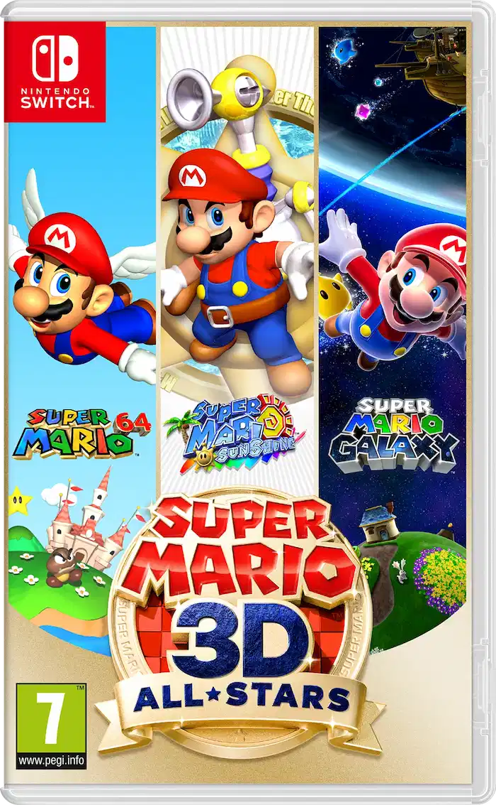
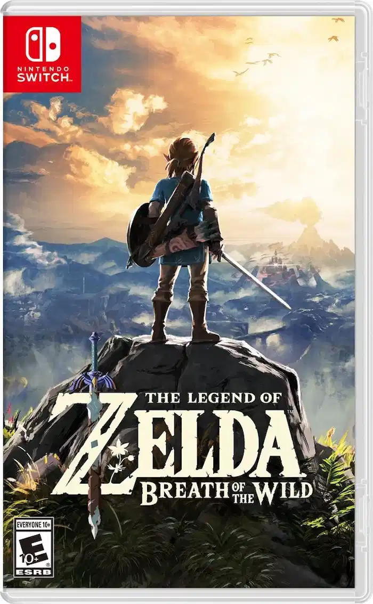
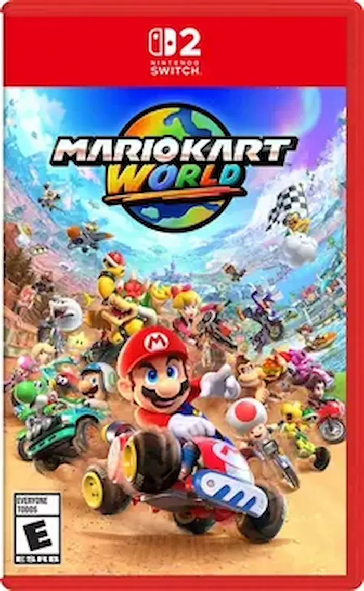
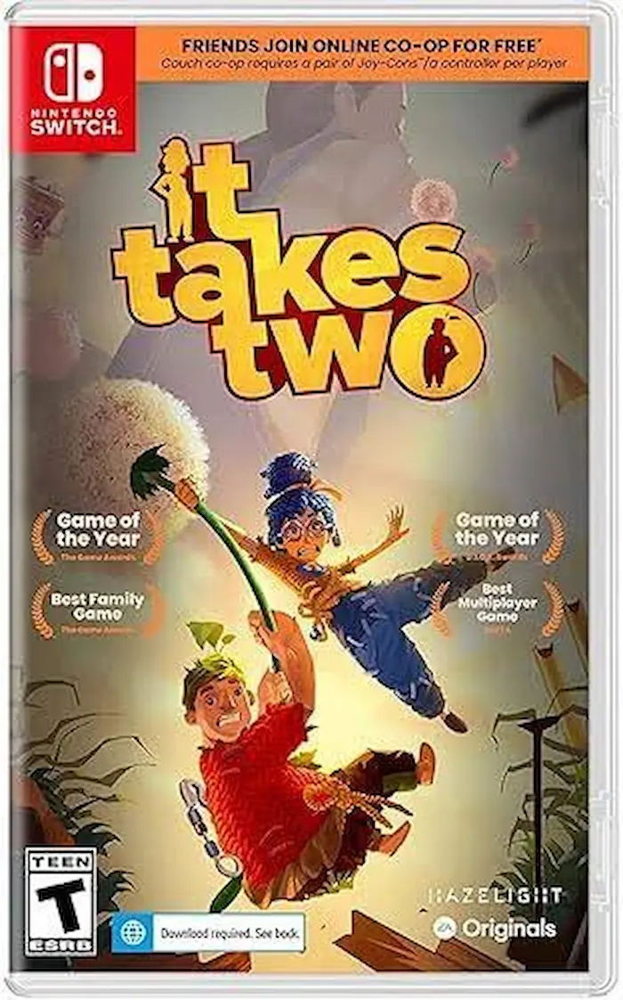
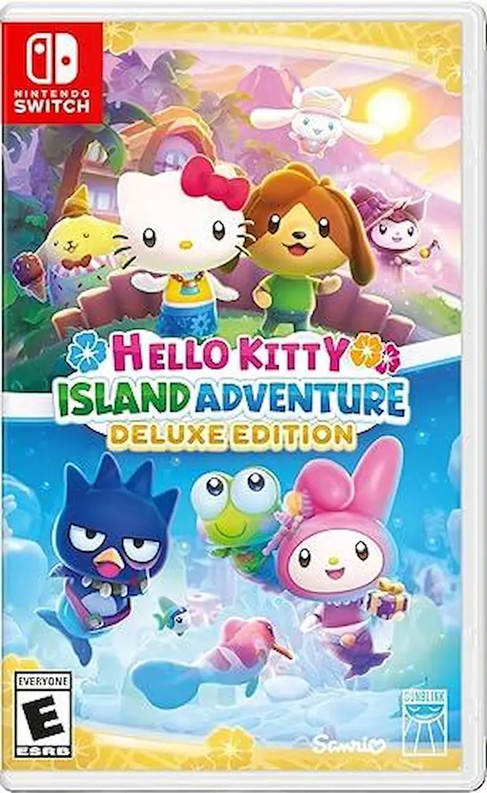
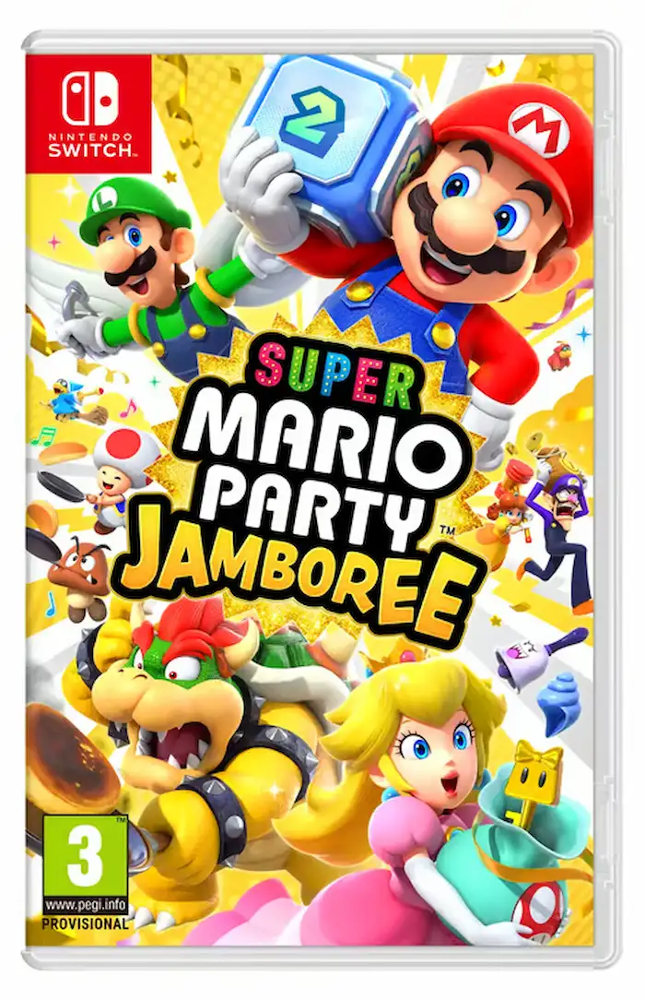

Super Mario 3D All Stars
$59.99
Super Mario 3D All-Stars is a Nintendo Switch compilation released on September 18, 2020. It features high-definition ports of three classic 3D platformers: Super Mario 64 (1996), Super Mario Sunshine (2002), and Super Mario Galaxy (2007). The package includes updated controls, optimized HD resolutions, and a built-in music player.

The Legend of Zelda: Breath of the Wild
$49.99
The Legend of Zelda: Breath of the Wild is an open-world action-adventure game released by Nintendo on March 3, 2017. Players guide an amnesiac Link as he wakes up from a 100-year slumber to explore the ruined kingdom of Hyrule and defeat Calamity Ganon.

Mario Kart World
$59.99
Mario Kart World is an open-world kart racing game for the Nintendo Switch 2. It supports up to 24 simultaneous players and introduces interconnected tracks, dynamic rail-grinding, vehicle transformations, and a high-stakes Knockout Tour mode.

It Takes Two
$49.99
It Takes Two Nintendo Switch is a genre-bending, award-winning action-adventure platformer built purely for two-player co-op. Players control Cody and May, a divorcing couple turned into dolls by a magic spell, who must work together through chaotic, imaginative levels guided by a magical love guru.

Hello Kitty Island Adventure
$59.99
Hello Kitty Island Adventure is an open-world life simulation game released on January 30, 2025. Players explore a large, vibrant island alongside iconic Sanrio characters like Hello Kitty and Kuromi, restore an abandoned theme park, solve puzzles, craft items, and decorate cabins.

Super Mario Party Jamboree
$59.99
Super Mario Party Jamboree for the Nintendo Switch is the biggest entry in the series yet. It features seven diverse board games (five new and two returning), 22 playable characters, and over 110 minigames. It supports local play for 1–4 players and online modes for up to 20 players.